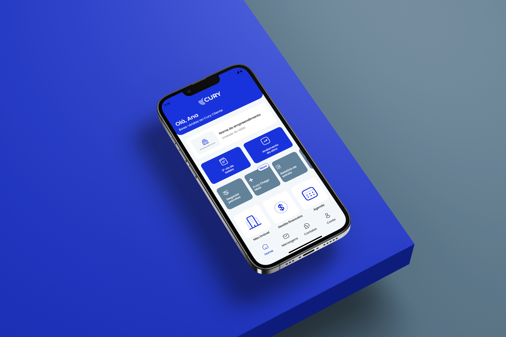
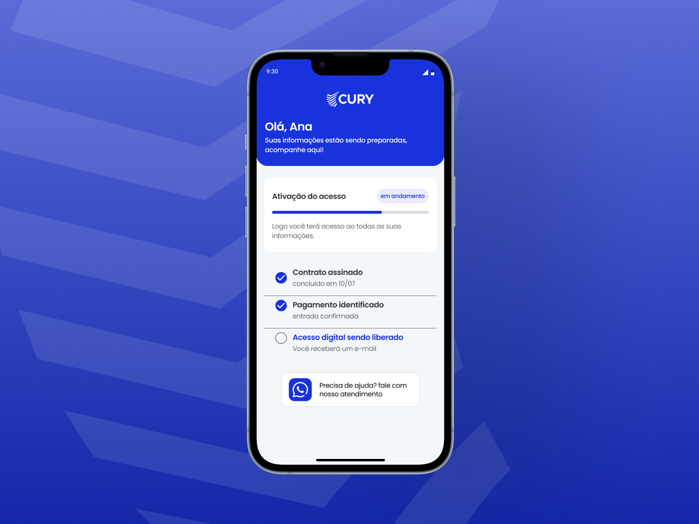
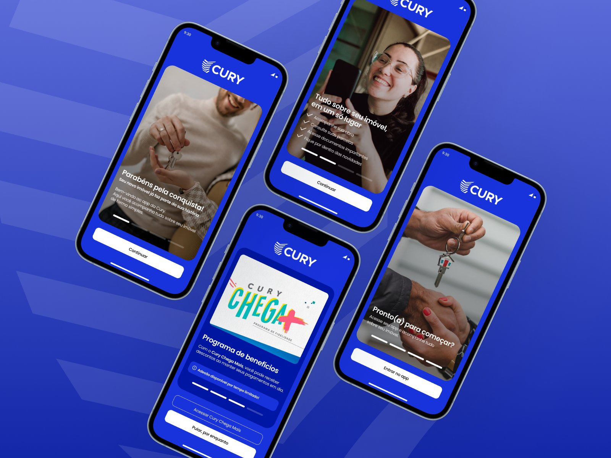
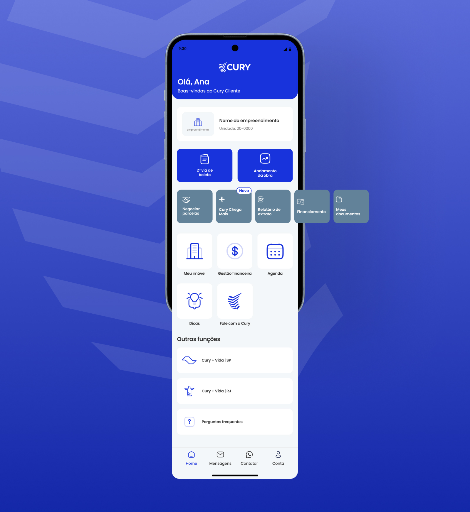
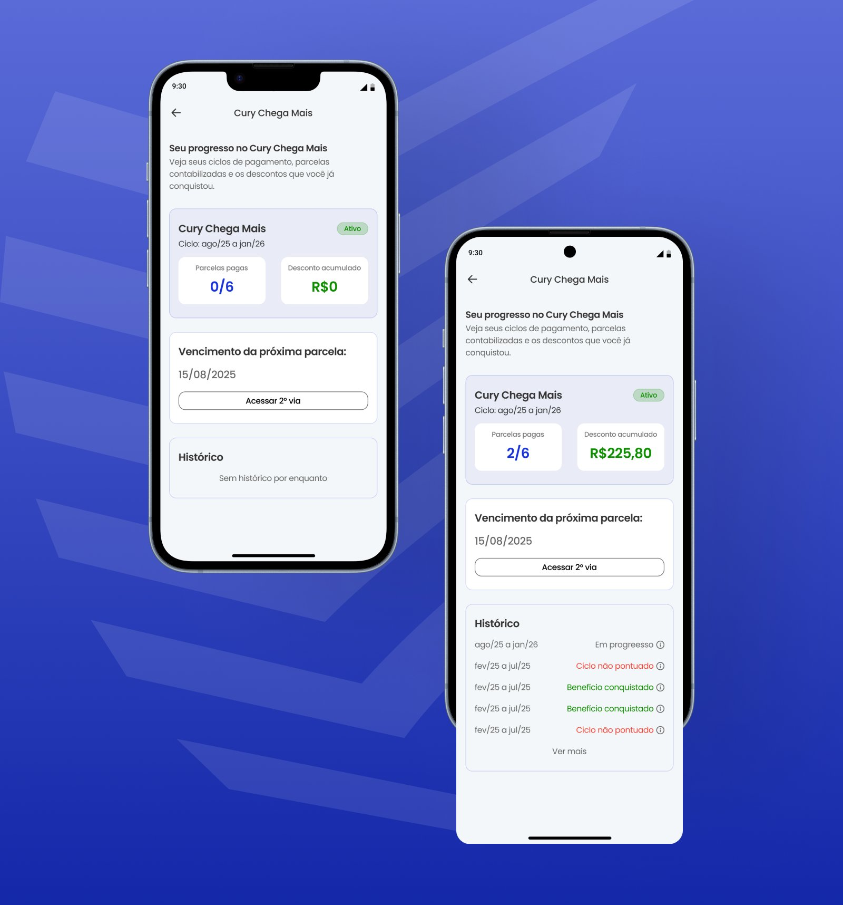
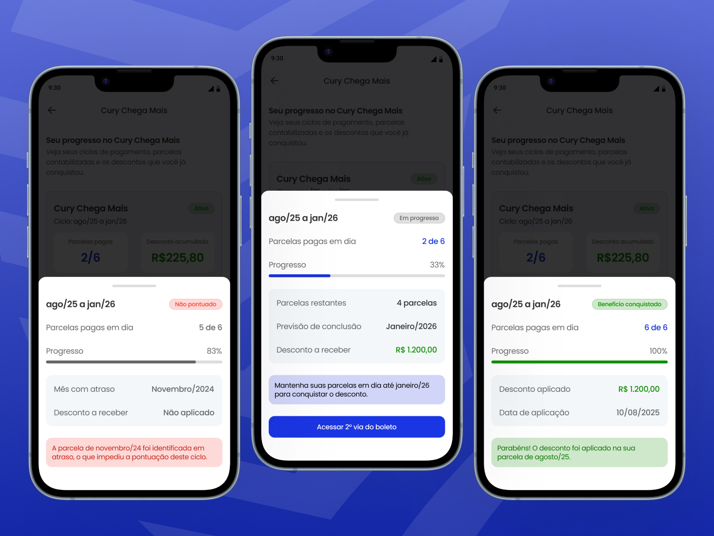

Estudo de UX do app Cury Cliente — identificando falhas críticas no onboarding pós-compra e propondo redesign do fluxo mais impactante para compradores de imóvel.

O Cury Cliente atende compradores de imóvel na planta — um público com alta carga emocional e baixa familiaridade com apps financeiros. É o maior investimento de suas vidas. A pesquisa foi conduzida a partir de fontes públicas — App Store, Google Play e Reclame Aqui — e revelou um padrão preocupante.
As dores foram classificadas por severidade e impacto emocional. As duas críticas têm algo em comum: acontecem exatamente no momento em que o comprador mais precisa do app — o que as tornou o ponto de partida natural para o redesign.
Relatos reais de compradores em plataformas públicas — que traduzem o impacto emocional por trás dos números.
Com base nas dores mapeadas, foram levantadas quatro hipóteses de solução. Três delas são de implementação rápida — mudanças de produto que não dependem de backend. A quarta é estrutural e resolve o problema na raiz, mas requer integração entre sistemas. Todas foram adotadas em combinação no redesign.
O onboarding pós-compra foi redesenhado do zero — priorizando o momento mais crítico da jornada do comprador e resolvendo cada dor identificada na pesquisa.
Em vez de loading infinito, o usuário vê seu checklist de ativação em tempo real — contrato assinado, pagamento identificado e acesso sendo liberado. Botão de WhatsApp direto para quem precisar de ajuda.

Fluxo de boas-vindas contextualizado — com apresentação do app, Chega Mais como passo guiado e CTA final para entrar no app.

Ícones e layout modernizados com hierarquia clara de ações — 2ª via de boleto e andamento da obra em destaque, Chega Mais com badge "Novo" e funções secundárias agrupadas ao final.

Funcionalidade inexistente no app atual. O usuário passa a acompanhar ciclo, parcelas pagas, desconto acumulado e histórico completo — eliminando dúvidas que hoje geram contato desnecessário com o atendimento.

Três estados possíveis ao abrir um ciclo do histórico: não pontuado (com mês exato do atraso), em progresso (com previsão e CTA para 2ª via) e benefício conquistado — eliminando a principal causa de contato com o atendimento.

O estudo resultou no mapeamento de dores do usuário, na identificação do fluxo prioritário e no redesign documentado do onboarding pós-compra e da tela interna do Chega Mais.